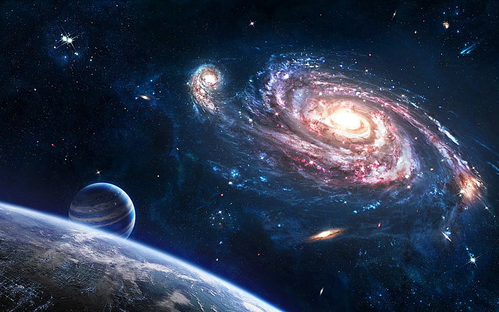
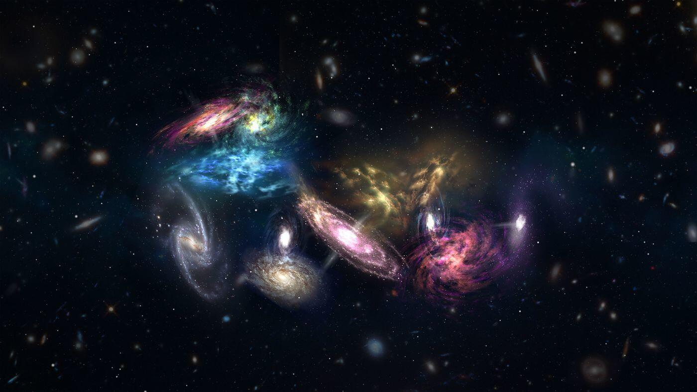
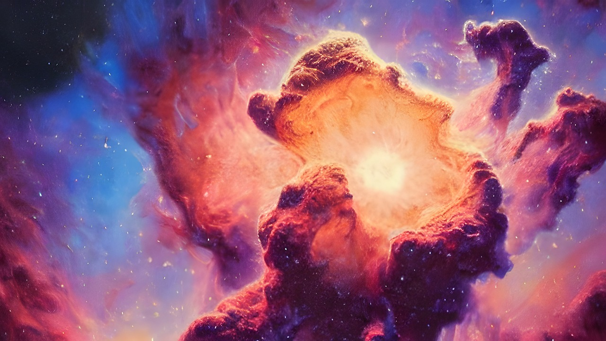

El universo es el conjunto de toda la materia y de toda la energía que existe en un espacio determinado
y que se están intercambiando constantemente una en otra, y nosotros constituimos una parte muy pequeña
de esa materia y de esa energía. Todo lo que no es materia y energía es vacío cósmico.
Cómo está constituido el Universo: tipos de estructura.
Según estudios y tras pensar cómo está constituido el universo hace falta tener en cuenta que su
estructura no es única. De hecho, existen grandes diferencias, como muestran estos nueve tipos:
- Galaxias: Estas pueden ser muy diferentes entre si y se dividen entre:
elípticas, lenticulares, espirales e irregulares. Agrupan gas, polvo, estrellas y materia
oscura. Muchas de las galaxias tienen un agujero negro en su centro.

- Estrellas: Una estrella es una gran masa de gases concentrados. Helio e
hidrógeno, principalmente. Tienen luz propia. Las supernovas son las que más luz tienen.
- Planetas: Los planetas giran alrededor de una estrella.
Están atrapados dentro de su campo de gravedad.
- Satélites: Los satélite giran alrededor de un planeta. La luna es el satélite de la tierra.
- Sistemas: Las estrellas, los planetas y demás cuerpos celestes que están dentro del mismo campo gravitatorio.
- Cúmulos: Acumulación o agrupación de varias galaxias. La vía Láctea forma parte del cúmulo conocido como Grupo Local.
- Súper- cúmulos de galaxias: Conjuntos de Cúmulos de Galaxias. El grupo local forma parte del Súper- Cúmulo de Virgo.

- Murallas: Son las últimas estructuras descubiertas. Están formadas por Súper- Cúmulos de galaxias.
- Gran Muralla de Hércules-Corona Boreal:
Un conjunto de galaxias unidas por la gravedad. Es la estructura más grande que se conoce actualmente.
Estructura del Universo: tipos de estructuras menores.
Las mencionadas son las estructuras del Universo más importantes. Son la base del estudio de la astronomía. Sin embargo, quienes saben cómo está constituido el Universo entienden que existen otras estructuras de menor tamaño dentro de él. Son las siguientes:
- Meteoros: Están formados por trozos de metal o roca de origen espacial. Éstos caen sobre los planetas, pero antes de alcanzar la superficie, se desintegra en la atmósfera.
- Meteoritos: Restos de material espacial que no se desintegra en la atmósfera, alcanzando la superficie planetaria.
- Nebulosas: Nube de polvo y gas que es iluminada por la luz de las estrellas.

- Cometas: Giran alrededor de una estrella. Están cubiertos de hielo. Cuando se acercan a la estrella sobre la que giran este hielo se trasforma en gas (sublimación) lo que forma la popular cola del cometa. Sus órbitas son más alargadas que las de los planetas.
Estructura de la Tierra.
La estructura del universo se expande constantemente. Eso es debido a que todos los días se descubren nuevas estructuras. Estrellas, planetas o galaxias aún por descubrir pueblan la totalidad del universo.
Uno de ellos es un viejo conocido nuestro: La Tierra. Nuestro planeta presenta la siguiente estructura:
- Biosfera: Parte habitable de la tierra. Consta de aire, tierra, ríos, lagos y océanos.
- Hidrosfera: Es la parte líquida de la tierra. Aproximadamente las ¾ partes.
- Atmosfera: Capa de gas que envuelve la tierra.
- Geosfera: Interior de la tierra y su corteza terrestre.
Ya sabes, por cómo está constituido el Universo, que su estructura lleva millones de años formándose. Está en continuo movimiento, crecimiento y desarrollo. Si quieres conocer más sobre astronomía y la estructura del Universo, prueba a realizar nuestro máster especializado. Podrás ampliar y profundizar en tus conocimientos astronómicos. El saber no ocupa lugar.